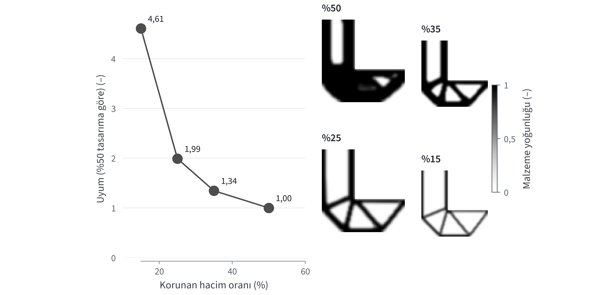
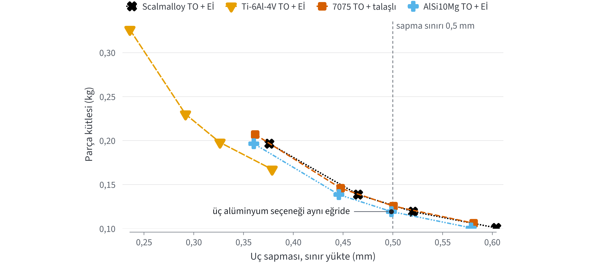
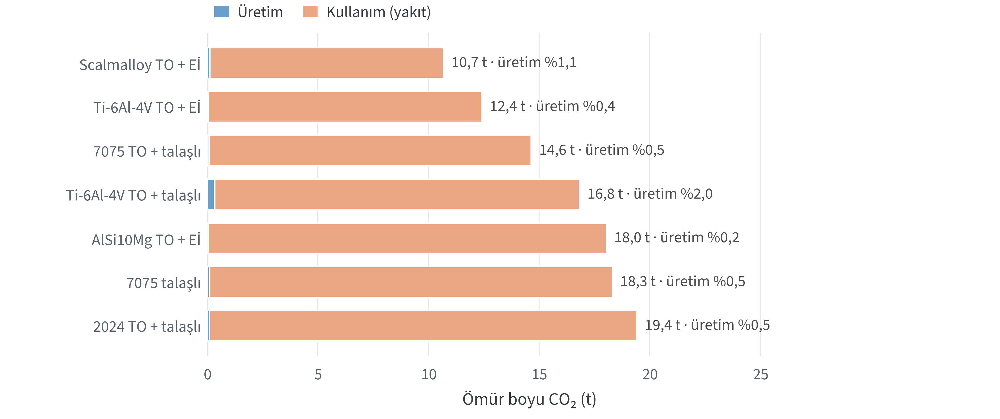
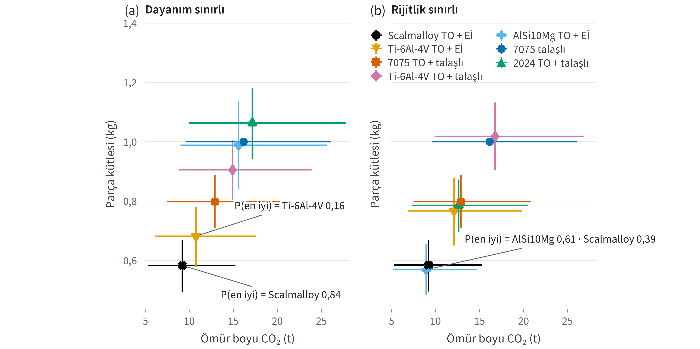
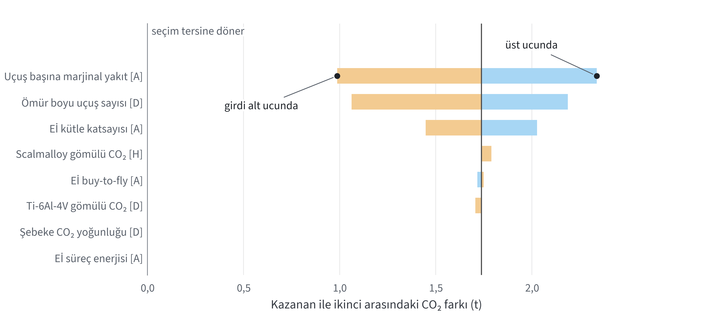
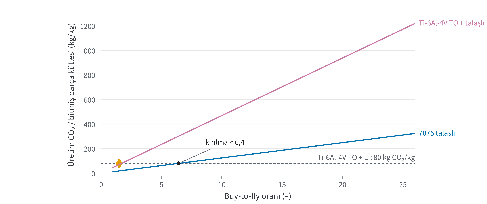

Hafifletme kararları
Topoloji optimizasyonu, malzeme seçimi ve yaşam döngüsü için yarışma öncesi hazırlık raporu
İçindekiler
- Hangi yöndeyiz
- Görevin olası biçimi
- Yarışma gününe hazır gelenler
- Karar kataloğu
- İnsan okuru için trade-off çalışması
- Yapay zekâ ajanı için trade-off çalışması
- Veri tabloları, çelişkiler ve boşluklar
Kaynak etiketleri
Her sayının yanındaki etiket, sayının nasıl elde edildiğini gösterir. D etiketli değer bu raporu hazırlayan oturumda kaynağından okundu. A etiketli değeri bir alt ajan tam metinden okudu, rapor yazarı ikinci kez okumadı. S etiketli değer yalnızca arama özetinde görüldü ve slayta tek başına konmaz. H etiketli değer bu çalışmada hesaplandı ve girdilerin en zayıf etiketini taşır. Y etiketi varsayım ya da mühendislik yargısı demektir.
Dosya yolları proje köküne (D:\Masaustu\Ideathon 2026) göredir. Hesaplar aerokit paketiyle yapıldı; tam test paketinin sonucu Bölüm 6'dadır. Kodla üretilen her sayı aşağıda adı verilen dosyalardan yeniden üretilebilir.
1. Hangi yöndeyiz
Synopsys'in 27 Ekim 2026 tarihli tanıtım sunumu, 2026 Ansys görevi için dört beceri sayıyor (s. 12) [D]. Bunlar yapısal sonlu elemanlar analizi, optimizasyon ve ödünleşim, malzeme seçimi ve yaşam döngüsü düşüncesidir. Önerilen kurslar Ansys Discovery'de topoloji optimizasyonu, Ansys Mechanical, Granta EduPack performans indeksleri ve Eco Audit aracıdır (s. 12–13) [D]. 2023 kartındaki uçak boyutlandırma ve STK görev planlaması bu listede yok.
Görevin bir hava aracı yapı parçasını hafifletmek, malzemesini seçmek ve kararı yaşam döngüsü CO₂'siyle savunmak olacağını düşünüyoruz [Y]. Bu varsayımla yedi seçenek beş senaryoda karşılaştırıldı [H]. Dört seçenek talaşlı alüminyum ya da titanyum parçadır ve bunların üçü topoloji optimizasyonundan geçer. Üç seçenek topoloji optimizasyonu ve eklemeli imalatla üretilir. Raporda topoloji optimizasyonu TO, eklemeli imalat Eİ diye kısaltıldı. Tablo 1 kazananları verir; yön şu altı maddede toplanıyor:
- Uçan parçada malzemeyi kütle seçiyor. Üretim evresi hiçbir seçenekte ömür boyu CO₂'nin %2,0'ını geçmedi [H].
- Dayanım yönetiyorsa Scalmalloy TO + Eİ, rijitlik yönetiyorsa AlSi10Mg TO + Eİ öneriliyor [H].
- Yakıt yakmayan bir parçada kazananı üretim ayak izi ile kütlenin parasal değeri arasındaki denge belirliyor; uydu senaryosu bu dengeyi gösteriyor [H].
- Titanyum yalnızca Eİ rotasıyla yarışta kalıyor. Scalmalloy'un akma dayanımı oda sıcaklığında 475 MPa, 150 °C'de 319 MPa, 300 °C'de 60 MPa [D]. Sıcak bir parçada aday bu yüzden titanyumdur.
- Kütle ve CO₂ ekseninde seçimi tersine çevirebilecek tek girdi Eİ rotasının kütle katsayısı; yarışma günü ilk ölçülecek sayı odur [H]. Maliyet girince seçim sağlamlığını yitiriyor ve Eİ imalat maliyeti belirleyici oluyor (Bölüm 5).
- Uydurma bir kartla yapılan provada tasarımı sapma yönetti ve üç alüminyum seçeneği ayrışmadı. Düzlemsel bir brakette talaşlı 7075 eklemeli imalatla yarışıyor [H].
| Senaryo | Ölçüt | Kazanan | Kütle (kg) | Ömür boyu CO₂ (kg) | P(en iyi) | İkinci |
|---|---|---|---|---|---|---|
| A320 braketi, dayanım | CO₂ | Scalmalloy TO + Eİ | 0,58 | 10 677 | 0,84 | Ti-6Al-4V TO + Eİ |
| ATR 72 braketi, dayanım | CO₂ | Scalmalloy TO + Eİ | 0,58 | 2 684 | 0,81 | Ti-6Al-4V TO + Eİ |
| A320 braketi, rijitlik | CO₂ | AlSi10Mg TO + Eİ | 0,57 | 10 371 | 0,61 | Scalmalloy TO + Eİ |
| Uydu braketi, dayanım | yalnız üretim CO₂ | AlSi10Mg TO + Eİ | 0,99 | 28 | 0,70 | Ti-6Al-4V TO + Eİ |
| Uydu braketi, dayanım | ceza fonksiyonu Z | Scalmalloy TO + Eİ | 0,58 | 117 | 0,86 | Ti-6Al-4V TO + Eİ |
Değerler studies/tradeoff/out/*.results.json dosyalarından alındı [H]. P(en iyi), girdiler belirtilen aralıklarda düzgün dağılımla örneklendiğinde seçeneğin en iyi puanı aldığı örneklerin payıdır; doğruluk olasılığı değildir. Aynı birincil alüminyum rotasını paylaşan alaşımların CO₂ değerleri birlikte örneklendi. Z'nin tanımı Bölüm 5'tedir.
2. Görevin olası biçimi
Sunumda görev metni yok; yalnızca beceriler, kurslar ve "See you on November 5th!" notu var (s. 15) [D]. Regulations v1.1'e göre kart 4 Kasım sabahı açıklanacak, yarışma blokları 5–6 Kasım'da. Bu belge 25 Ekim'de okundu, bugün yeniden okunmadı.
Kamuya açık tek Ansys Ideathon kartı 2023'e ait [A]. Kart kavramsal uçak tasarımı ile STK görev planlaması istiyor ve yapısal ayrıntıya girilmemesini söylüyor [D]. 2024'ün Ansys görev metni yayımlanmamış [A].
Benzer akademik görevlerden en yakını Ansys'in bisiklet krankı örneği [A]. Örnekte EduPack ile malzeme seçimi, Discovery ile topoloji optimizasyonu, sadeleştirilmiş yaşam döngüsü analizi ve ödünleşim göstergeleri tek akışta bağlanmış. GE'nin 2013 motor braketi yarışması malzemeyi Ti-6Al-4V, en küçük duvarı 1,27 mm olarak vermişti [A]. Parça özgün zarfın içinde kalmalı ve dört yük durumunu taşımalıydı.
| Sıra | Görev biçimi | Kullanım evresi | Hazır senaryo dosyası |
|---|---|---|---|
| 1 | Gövde ya da motor braketi / bağlantı parçası, 1–3 statik yük durumu | yakıt (marjinal) | bracket_a320_*.json, bracket_atr72_strength.json |
| 2 | İHA ya da eVTOL kolu / bomu | batarya elektriği | yok; A320 dosyası şebeke ve enerji girdisiyle uyarlanır |
| 3 | Uydu braketi (g yükü + frekans sınırı) | yok; fırlatma maliyeti | bracket_satellite_strength.json, bracket_satellite_penalty.json |
| 4 | Kabin koltuğu ya da tepsi parçası, yüksek adet | yakıt | A320 dosyası |
| 5 | Kanat kaburgası, iniş takımı bağlantısı, kapı menteşesi | yakıt | A320 dosyası, indeks değişir |
Kurulum durumu
1 Kasım'da bu dizüstü bilgisayarda C: sürücüsünde 3,42 GB boş yer ölçüldü; Ansys Student 50 GB istiyor [D]. Ansys Student kurulu değil. Ekran kartı Turing mimarili GTX 1660 Ti. Sunumdaki Discovery listesinde Kepler, Maxwell ve Pascal var, Turing yok (s. 9) [D]. Granta EduPack öğrenci paketinde yer almıyor [D].
Discovery açılmazsa topoloji optimizasyonu Mechanical'da yapılır; EduPack yoksa malzeme verisi Bölüm 7'deki kaynaklı tablolardan gelir.
3. Yarışma gününe hazır gelenler
Beş saatlik bir slotun ilk yarısı, görev kartı okunmadan yapılabilecek kararlardan oluşuyor. Bu kararların varsayılan değeri, kaynağı ve kodu hazır; kart açıldığında yalnızca kartın verdiği sayılar ve topoloji sonucu girilecek.
| Adım | Hazır olan | Kart gelince doldurulacak |
|---|---|---|
| Yük katsayısı | Bağlantı parçasında nihai yük = 1,5 × 1,15 = 1,725 × sınır yük (14 CFR 25.303, 25.625) [A] | Sınır yükler; kart nihai yük veriyorsa 1,5 eklenmez |
| Performans indeksi | Hem rijitlik (beam_stiff) hem dayanım (beam_strong) indeksi koşulur [H] | Hangi kısıtın yönettiği, doğrulama analizinden |
| Aday malzemeler | 7 seçenek, özellikleri ve CO₂ değerleri kaynaklı (Bölüm 7) | EduPack alaşım kayıtları ve fiyatları |
| Sıcaklık | Scalmalloy 100 °C'nin altında kalır; üstünde titanyum [D] | Parçanın çalışma sıcaklığı |
| Topoloji ayarı | Hacim taraması %50 / 35 / 25 / 15, aralık olarak; ya çıkıntı 45° ya en küçük eleman boyutu ≥ 2,5 × eleman boyu, ikisi birden değil [A] | Tasarım zarfı, korunacak bölgeler, en küçük duvar |
| Doğrulama | Düzgünleştirme, arayüzleri yeniden bağlama, her yük durumunda doğrulama çözümü; sınırın %5 yakınındaysa ağ inceltme [A] | Doğrulanmış kütle → rota kütle katsayısı |
| Yaşam döngüsü | Uçuş başına marjinal yakıt, uçuş sayısı, şebeke ve yakıt CO₂ katsayıları, aralıklarıyla | Uçak sınıfı ve sefer uzunluğu |
| Ödünleşim | scripts/tradeoff_study.py: nominal sıra, Pareto, Monte Carlo, tornado | Yukarıdaki girdilerle yeniden koşmak (≈ 10 s) |
| Jüri çıktıları | Hacim taraması eğrisi (Şekil 5 kalıbı), yük durumu başına önce/sonra tablosu, evre çubukları + duyarlılık [Y] | Görseller |
Hacim taramasının kalıbı
Hacim taraması L-braket kıyas probleminde önceden koşuldu (aerokit SIMP, 60 × 60 eleman, yoğunluk filtresi) [H]. Korunan hacim %50'den %25'e inince uyum 1,99 katına, %15'e inince 4,61 katına çıktı. Eğrinin dirseği %25 ile %35 arasında kaldığından yarışma günü tarama bu aralığın çevresine kurulur [Y].

| Korunan hacim (%) | Göreli uyum | İterasyon | Gri ölçüsü (%) | Parça kütlesi (g) | σ nihai / Rp0,2 | Sapma sınırı 0,5 mm |
|---|---|---|---|---|---|---|
| 50 | 1,00 | 103 | 11,0 | 197 | 0,36 | geçti (0,38 mm) |
| 35 | 1,34 | 275 | 17,3 | 139 | 0,39 | geçti (0,47 mm) |
| 25 | 1,99 | 109 | 20,2 | 101 | 0,46 | kaldı (0,60 mm) |
| 15 | 4,61 | 334 | 21,9 | 63 | 0,63 | kaldı (0,92 mm) |
Kartın ilk 20 dakikasında
- Gereksinimleri birimleriyle tabloya yazın: yükler, arayüzler, yer değiştirme ya da rijitlik sınırı, emniyet katsayısı, imalat yolu, çalışma sıcaklığı.
- Parçanın uçağını ya da aracını belirleyin ve ona en yakın senaryo dosyasını kopyalayın.
- Kartın verdiği malzeme ya da süreç kısıtıyla seçenek listesini daraltın. 7075 ve 2024 Eİ rotasında sunulmaz. Liang vd. 2025'e göre Al7075 toz yataklı lazer füzyonda katılaşma çatlağı veriyor ve çatlaksız baskı için çekirdeklendirici gerekiyor [D]. Aynı makale 2024'ün de Ti nano parçacıkla değiştirilerek basıldığını aktarıyor.
- Kartı
studies/cards/template_cantilever.jsonya darehearsal_l_bracket.jsonkalıbına girin vepython scripts/card_day.pykomutunu çalıştırın. Komut tasarımları, doğrulamayı, sıralamayı ve İngilizce sunum figürlerini bir iki dakikada üretiyor [H]. python scripts/tradeoff_study.pyile genel sıralamayı alın ve tornado listesinin ilk üç girdisini ölçüm sırası olarak kullanın.
Uydurma bir kartla ilk yarının provası
Hazırlığın yarım yolu gerçekten karşılayıp karşılamadığını görmek için uydurma bir görev kartı uçtan uca çözüldü [H]. Kart resmî değildir. A320 kabin braketi için 120 × 120 mm'lik L biçimli bir tasarım alanı, 48 mm kol genişliği ve 10 mm kalınlık verildi. Üst kenar cıvatalı ve kol ucunda 2,0 kN düşey sınır yük var. Sınır yükte uç sapması en çok 0,5 mm, çalışma sıcaklığı 20–60 °C.
Nihai yük 1,5 × 1,15 × 2,0 = 3,45 kN oldu. Topoloji tasarımları Şekil 5'teki taramadan alındı ve %30 hacimde bir koşu eklendi. Her tasarım 0,5 eşiğiyle siyah-beyaza çevrildi ve 2 mm'lik düzlem gerilme elemanlarıyla çözüldü [H]. Eleman merkezi von Mises hesabı, düzgün çekme altındaki bir levhada σ = P/(h·t) sonucunu 1,0000 oranla verdi [H]. Yük noktası ve cıvatalı kenar çevresindeki üç sıra eleman tekil gerilme nedeniyle değerlendirme dışında tutuldu.
| Seçenek | Korunan hacim (%) | Kütle (g) | σ nihai / Rp0,2 | Sapma (mm) | Ömür boyu CO₂ (kg) |
|---|---|---|---|---|---|
| AlSi10Mg TO + Eİ | 35 | 139 | 0,86 | 0,462 | 2527 |
| Scalmalloy TO + Eİ | 35 | 139 | 0,39 | 0,482 | 2551 |
| 7075 TO + talaşlı | 35 | 146 | 0,38 | 0,464 | 2661 |
| Ti-6Al-4V TO + Eİ | 25 | 167 | 0,27 | 0,393 | 3058 |

Bu kartta tasarımı sapma yönetiyor. Dayanım marjı Scalmalloy, 7075 ve titanyumda geniş, AlSi10Mg'de dar; AlSi10Mg'de σ nihai / Rp0,2 oranı 0,86 [H]. Üç alüminyum seçeneği sapma sınırını aynı korunan hacimde, %35'te karşılıyor. AlSi10Mg'nin E belirsizliği ±3 GPa, yani yaklaşık %4 [D]; aralarındaki sapma farkı da bu büyüklükte. Bu kartta alüminyum alaşımları sapmaya göre ayrışmıyor, seçimi dayanım marjı, imalat ve fiyat belirliyor [H].
Düzlemsel bir braketin topoloji sonucu 2,5 boyutludur, bu yüzden talaşlı imalata da uygundur. 7075 parçanın stok plakaya göre buy-to-fly oranı 2,8 çıktı; çalışmalarda varsayılan 8'in çok altında [H]. Eİ'nin kütle avantajı bu geometride kayboluyor. Eİ'nin fark yaratması için parçanın üç boyutlu, plakadan çıkarılamayan bir biçim istemesi gerekir [Y].
Aynı %35 tasarımı iki ve dört kat inceltilmiş ağlarda yeniden çözüldü [H]. Uç sapması %2,2 ve %3,7 arttı; 2 mm'lik ağ sapmayı en az %3,7 düşük tahmin ediyor. Tablo 5'teki sapmalar bu yüzden 1,037 ile çarpıldı. Düzeltmeden önce %30 hacimde sınırı 0,499 mm ile geçen AlSi10Mg, düzeltmeden sonra 0,517 mm ile kalıyor.
En büyük von Mises gerilmesi inceltmeyle 1,39 ve 1,92 katına çıktı; yüzde 99'luk değer ise yalnızca %1,8 değişti [H]. Bu, L'nin iç köşesindeki tekil noktanın imzası. Gerçek parçada köşeye kavis verilir; gerilme köşeden uzakta ya da yakınsayan bir ölçüyle okunur. Tablo 5'teki dayanım oranları kaba ağın köşe dışı en büyük değerinden hesaplandı.
Prova iki boyutlu bir düzlem gerilme modeliyle yapıldı ve Discovery'nin üç boyutlu analizinin yerini tutmaz. Komut python scripts/rehearsal_bracket.py, sonuçlar studies/rehearsal/rehearsal.json dosyasındadır.
4. Karar kataloğu
Katalogdaki 25 kararın ayrıntılı kanıtları reports/Havacılık hafifletme karar kataloğu.md dosyasındadır. Makine okunur sürüm studies/tradeoff/decision_rules.json dosyasında, provadan çıkan D-26 kuralıyla birlikte duruyor. Tablo 6, slot sırasına göre varsayılanları ve sapma koşullarını veriyor.
| No | Karar | Varsayılan ve kanıt | Ne zaman sapılır |
|---|---|---|---|
| D-25 | Araç zinciri | Mechanical + aerokit [D] | EduPack ve Discovery çalışıyorsa onlar |
| D-04 | Yük katsayısı | 1,725 × sınır; tek yük yolunda A-basis [A] | Eİ için 1,25'i döküm katsayısı benzetmesiyle göster, üst üste ekleme (25.619) |
| D-12 | Yük durumları | ≥ 3 bağımsız durum, nihai yükte [A] | Kart tek yük veriyorsa ek durumları varsayım olarak yaz |
| D-07 | İndeks | Rijitlik ve dayanım indeksi birlikte [D] [H] | İnce gövde ya da uzun dikme: panel ya da burkulma indeksi |
| D-01 | Malzeme ailesi | Dayanım sınırlı: Scalmalloy Eİ; rijitlik sınırlı: AlSi10Mg Eİ; 100 °C üstü: Ti-6Al-4V Eİ [H] [A] | CFRP'ye temas: titanyum ya da cam kat yalıtımı; kabin: magnezyum yok |
| D-02 | Rota | Talaşlı buy-to-fly ≈ 1,8'i aşıyorsa Eİ [A] [H] | Prizmatik parça; düşük buy-to-fly'lı dövme |
| D-03 | Hacim hedefi | %50 / 35 / 25 taraması [A] | Aşırı tasarlanmış referans: %15–20'ye in |
| D-11 | İmalat kısıtı | Çıktı 45° ya da eleman boyu ≥ 2,5 h [A] | Tetrahedral ağ + pull-out: ≥ 4 h |
| D-26 | Yönetici kısıt | Aynı topolojide her aday için dayanım marjı ve sapma birlikte okunur [H] [D] | Alüminyumlar E belirsizliği içinde kalırsa seçim dayanım marjı, imalat ve fiyatla yapılır |
| D-13 | Doğrulama | Her durumda doğrulama çözümü [A] | Sınıra %5'ten yakınsa ağ inceltme |
| D-14 | Yorulma | Eİ Ti-6Al-4V: HIP + yorulma yüzeylerini işleme [A] | — |
| D-17 | Malzeme CO₂ | EduPack kaydı + düşük ve yüksek şebeke durumu [D] [A] | EduPack yoksa Tablo 9 ve 11 |
| D-05 | Kullanım evresi | Marjinal sefer başı yakıt [A] [H] | Uçak dışı araç: kendi görev yakıt oranıyla f/(1−f) |
| D-06 | Ömür sonu | EduPack geri dönüşmüş içerik yöntemi; ömür sonu potansiyeli ayrı çubuk [A] | Jüri geri dönüşüm kredisi isterse ayrı durum |
| D-09 | Ödünleşim | Pareto (ağırlıksız); maliyet girerse Z = C + α·m [D] [A] | Tek sayı istenirse α aralığıyla ve başa baş α* ile |
| D-23 | Başlık iddiası | % ve kg kazanç + tutulan kısıt + CO₂ + P(en iyi) + tersine çeviren girdi [Y] | — |
5. İnsan okuru için trade-off çalışması
Her seçeneğin kütlesi, referans parçanın (7075-T6, talaşlı, 1 kg) yönetici indeks oranıyla ve rotanın kütle katsayısıyla hesaplandı. Üretim CO₂'si, satın alınan malzemenin gömülü CO₂'si ile süreç elektriğinin şebeke CO₂'sinin toplamıdır. Kullanım CO₂'si kütle × uçuş başına marjinal yakıt × uçuş sayısı × 3,16 kg CO₂/kg yakıt çarpımıdır [H]. Girdi aralıkları Bölüm 7'deki tablolardadır.

Şekil 1'de seçenekleri ayıran şey parçanın kütlesi. Üretim evresinin payı hiçbir seçenekte %2,0'ı geçmediği için rota seçiminin üretim etkisi toplamı en çok bu kadar oynatıyor. Eko denetimin başlık sayısı bu yüzden doğrulanmış kütledir.

beam_strong, sağ panel beam_stiff indeksini kullanıyor.Rijitlik sınırlı panelde AlSi10Mg parça 0,569 kg, Scalmalloy parça 0,581 kg; fark %2,1 [H]. Farkın kaynağı E modülleri ve skandiyumun ayak izi; hesaba AlSi10Mg için 72 GPa, Scalmalloy için 69 GPa girildi [D]. AlSi10Mg örneklerin %61'inde önde [H].

Şekil 3'teki farkı en çok yakıt katsayısı, uçuş sayısı ve Eİ kütle katsayısı oynatıyor. Scalmalloy'un 68–128 kg/kg'lık gömülü CO₂ aralığı farkı yalnızca 1,74 ile 1,79 t arasında tutuyor [H].

ORNL'nin talaşlı braketlerinde buy-to-fly oranı 8 ve 33 [A]. Şekil 4'e göre bu oranlarda talaşlı titanyumun bitmiş kilogram başına üretim CO₂'si Eİ titanyumunkinin yaklaşık 5 ila 19 katıdır [H]. Titanyum seçilecekse rota Eİ'dir; talaşlı titanyum beş senaryoda 4. ile 7. sıra arasında kaldı [H].
Kullanım evresi olmayan parça: uydu
Uydu senaryosunda yakıt hesaba girmiyor. Yalnızca üretim CO₂'si sayıldığında AlSi10Mg Eİ örneklerin %70'inde birinci oldu, Scalmalloy altıncı sıraya düştü [H]. Bir kilogram Scalmalloy 0,35 kg AlSc2 ana alaşımı içeriyor; bu ana alaşımın kilogramı 172 kg CO₂e taşıyor (Tablo 11) [D].
Uyduda kütlenin değeri fırlatma maliyetiyle ölçülür. Ceza fonksiyonu Z = α·kütle + c·CO₂ olarak kuruldu [D]. Kütlenin değeri için Ashby'nin uzay aracına verdiği değişim sabitinin alt ucu, kilogram başına 3000 alındı [D]. Karbonun fiyatı 2025 AB ETS ortalamasıdır, ton başına 74,31 € [D]. Bu ölçütle Scalmalloy örneklerin %86'sında birinci oldu [H].
Sıranın tersine dönmesi için karbon fiyatının ≈ 13 800 €/t, yani 2025 ortalamasının yaklaşık 186 katı olması gerekir [H]. Hesap sterlinle avroyu aynı mertebede sayıyor, çünkü Ashby'nin tablosunda para birimi simgesi okunamadı [Y].
Sonucu değiştirebilecek varsayımlar
- Eİ kütle katsayısı 0,6. Uçan Eİ parçalarındaki %30–50 kazançtan alındı [A]. Talaşlı TO katsayısı 0,8 iken Eİ katsayısı ≈ 0,82'yi aşarsa talaşlı rota kazanıyor; dayanımda 7075, rijitlikte 2024 [H].
- Skandiyumun ayak izi. Alt sınır Hengevoss vd.'nin kırmızı çamurdan yeni üretim rotasıdır ve Scalmalloy'a 68 kg CO₂/kg verir [H]. Üst sınır 128'dir, çünkü aynı makale mevcut üretimin GWP'sini yeni rotanın yaklaşık iki katı veriyor. Uçan parçalarda bu aralığın tamamında Scalmalloy önde kaldı.
- Toz üretimi. Atomizasyon eklenmedi; ORNL'ye göre titanyum tozunda enerjiyi %2,4 artırıyor [A].
Maliyet girince karar sağlamlığını yitiriyor
Malzeme fiyatı ve imalat maliyeti her malzeme ve rota çifti için ayrı aralıkla girildi. Aralıklar Tablo 16'dadır [A] [S] [Y]. Ölçüt Z = maliyet + α·kütle + c·CO₂ oldu. Kütlenin değeri α = 500 €/kg, karbonun fiyatı c = 74,31 €/t alındı [D]. Nominal sırada Scalmalloy Eİ yine birinci, ama 3000 örnekte birinci gelme payı yalnızca 0,26 [H]. Ti-6Al-4V Eİ 0,43, topoloji optimizasyonlu talaşlı 7075 0,31 ile ondan daha sık birinci oluyor.
| Seçenek | Kütle (kg) | Maliyet (€) | Ömür boyu CO₂ (kg) | Z (€) | P(en iyi) |
|---|---|---|---|---|---|
| Scalmalloy TO + Eİ | 0,58 | 464 | 10 677 | 1547 | 0,26 |
| 7075 TO + talaşlı | 0,80 | 144 | 14 641 | 1632 | 0,31 |
| Ti-6Al-4V TO + Eİ | 0,68 | 452 | 12 414 | 1713 | 0,43 |
Altı girdi tek başına seçimi tersine çevirebiliyor; en güçlüsü Eİ imalat maliyeti, aralığı kilogram başına 220–1910 € [H]. Karbon fiyatlandığında Scalmalloy Eİ, kütlenin değeri 116 €/kg'yi aşınca talaşlı 7075'i geçiyor [H]. Karbon fiyatlanmazsa bu eşik 1456 €/kg'ye çıkıyor. Ashby'nin sivil uçak için verdiği 100–500/kg aralığı bu iki eşiğin arasında kalıyor [D]. Jüriye kütle ve CO₂ ekseninde sağlam olan seçimi, maliyetin hangi varsayımla değiştiğini söyleyerek sunmak gerekiyor [Y].
Kullanım evresi katsayısında dikkat
EduPack'in mobil kullanım modu, uzun menzilli uçak için 6,5 MJ/t·km'lik bir yük taşıma yoğunluğu kullanıyor [S]. Bu değer ortalama bir taşıma yoğunluğudur. Steinegger'in A320, A330 ve A380 için verdiği marjinal değer 0,020–0,041 kg yakıt/kg/1000 km'dir [A]. Yaklaşık 43 MJ/kg alt ısıl değerle [Y] bu aralık 0,86–1,76 MJ/t·km eder. EduPack'in kullanım çubuğu bu yüzden marjinal hesabın yaklaşık 4–8 katı çıkabilir [H]. Jüriye iki değeri yan yana göstermek ve başlık iddiasında düşük olanı kullanmak öneriliyor [Y].
6. Yapay zekâ ajanı için trade-off çalışması
İnsan okuru için kurulan çalışma, bir ajanın yarışma günü değiştirip yeniden koşabileceği biçimde de saklandı. Tablo 8 bu sürümün dosyalarını sıralar.
| Dosya | İçerik |
|---|---|
studies/tradeoff/README.md | Şema, modelin tam denklemleri, düzenleme kuralları, sonucun nasıl okunacağı (İngilizce) |
studies/tradeoff/*.json | Altı senaryo; her sayısal girdi value, low, high, unit, source, tag ve isteğe bağlı group alanlı bir faktör nesnesi |
studies/tradeoff/decision_rules.json | 24 karar kuralı (katalogdaki 25 kararın 23'ü ve provadan gelen D-26): koşul → varsayılan → kanıt (etiketli) → bağlandığı girdi alanı; dört değişmez kural |
studies/tradeoff/build_studies.py | Altı senaryoyu tek tanımdan yeniden yazar |
src/aerokit/design/tradeoff.py | Değerlendirici: nominal, Pareto, ceza fonksiyonu, ilişkili Monte Carlo, tornado; testleri tests/test_tradeoff.py |
scripts/retain_sweep.py | Hacim taraması; sonuçlar studies/retain_sweep/retain_sweep.json |
src/aerokit/design/card.py, scripts/card_day.py | Kart JSON'undan yük, topoloji, doğrulama, ağ katsayısı, sıralama ve sunum figürleri; testleri tests/test_card.py |
Değerlendirici çıplak sayıyı reddeder: her girdinin kaynağı ve etiketi olmalıdır. low ≤ value ≤ high koşulu yüklemede denetlenir. Aynı group adını taşıyan girdiler Monte Carlo'da aynı kuantilden çekilir; birincil alüminyum alaşımları bu yolla birlikte hareket eder. Çıktıdaki weak_inputs listesi [S] ve [Y] etiketli girdileri sıralar. Ajan önce bunları, sonra tornado sırasındaki girdileri değiştirir.
Ajan için dört değişmez kural tanımlandı:
- Etiket hiçbir zaman yükseltilmez.
- Marjinal ve ortalama yakıt katsayısı aynı zincirde karıştırılmaz.
- Rota kütle katsayıları topoloji sonucu doğrulanana kadar varsayım sayılır.
- Bir seçim ancak P(en iyi) ≥ 0,8 ise ya da onu tersine çeviren girdi adıyla yazılırsa raporlanır.
python scripts/tradeoff_study.py studies/tradeoff/bracket_a320_strength.json komutu out/<senaryo>.results.json ve .results.md dosyalarını yazar. Figürleri python scripts/report_figures.py, python scripts/retain_sweep.py ve python scripts/rehearsal_bracket.py üretir. Datawiz denetiminde altı figürün hiçbirinde HATA çıkmadı ve set tutarlı bulundu.1 Kasım 2026'da tam test paketinde 1372 test geçti, 1 test atlandı ve 3324 sayısal kontrolün tamamı geçti [H]. Trade-off modülünün 18 ve prova gerilim hesabının 3 el hesabı kontrolü bu sayıya dahildir.
7. Veri tabloları, çelişkiler ve boşluklar
| Aile | Gömülü enerji (MJ/kg) | CO₂ (kg/kg) | Geri dönüşüm CO₂ (kg/kg) | Arzdaki geri dönüşüm payı |
|---|---|---|---|---|
| Titanyum alaşımları | 650–720 | 46,5 | 5,2 | %23 |
| Karbon elyaf (yalnız elyaf) | 450–500 | 33–36 | — | — |
| Magnezyum alaşımları | 300–330 | 36 | 2,9 | %36–41 |
| Nikel süperalaşımları | 221–244 | 11,6 | 2,14 | %22–26 |
| Alüminyum | 200–220 | 12 | 2,1 | %41–45 |
| Epoksi | 127–140 | 6,8–7,5 | — | — |
| CTP (GFRP) | 107–118 | 7,47–8,26 | — | — |
| Paslanmaz çelik | 81–88 | 5,0 | 0,73 | %35–40 |
IAI'ye göre birincil alüminyumun ayak izi çoğunlukla 4,5–22 kg CO₂e/kg aralığında, 2023 dünya ortalaması 14,8 [A]. Ti-6Al-4V külçesi hidroelektrikle 16,1, Çin şebekesiyle 37,3 kg CO₂e/kg (Lessard vd. 2025) [A]. OWID/Ember verilerine göre 2024'te elektriğin CO₂ yoğunluğu AB-27'de 211, Fransa'da 40,5 g/kWh'ydi [D]. Aynı yıl için Türkiye'de 469,7, Çin'de 555,4 g/kWh veriliyor. Ondalık basamaklar kaynakta basıldığı gibidir.
| Malzeme ve durum | ρ (kg/m³) | Rp0,2 (MPa) | Çekme (MPa) | E ve not |
|---|---|---|---|---|
| Scalmalloy, gerilim giderilmiş 325 °C/4 h [A] | 2670 | 490–500 | 520–530 | E 69 GPa yatay, 68 GPa dikey (aynı ısıl işlem; Colibrium) [D] |
| Ti-6Al-4V ELI, L-PBF (EOS M290, 800 °C/2 h) [A] | ≈ 4410 | 945 / 965 | 1055 / 1075 | yatay / dikey |
| Ti-6Al-4V, EBM (Colibrium, imal edildiği gibi) [A] | — | 907–940 | 986–1015 | E sütunu boş |
| Airware 2050-T84 levha, 12,7–38,1 mm [A] | 2700 | ≥ 476 | ≥ 503 | E 76,5 GPa (tipik) |
| 2099-T83 profil, 0,50–0,999" [A] | — | 524 | 558 | E 78 GPa |
| AlSi10Mg, gerilim giderilmiş 270 °C/90 dk (EOS) [A] | 2670 | 220 / 225 | 340 / 350 | E 72 ± 3 GPa (XY, imal edildiği gibi; AddUp) [D] |
Scalmalloy tozunun bileşimi Al-4,7Mg-0,7Sc-0,27Zr-0,48Mn (ağırlıkça %, Höganäs tozu; Mehta vd. 2022, Tablo 2) [D]. Nikon SLM veri sayfası Sc için %0,68–0,84 aralığı veriyor [D]. AddUp'a göre AlSi10Mg'nin E modülü 210 °C/2 h gerilim gidermeden sonra 77 ± 4 GPa'ya çıkıyor [D].
| Ürün | Birikimli enerji (GJ/kg) | GWP (kg CO₂e/kg) |
|---|---|---|
| Sc₂O₃ | 148 | 5290 |
| ScF₃ | 99,8 | 3500 |
| AlSc %2 ana alaşımı | 4,8 | 172 |
Hengevoss vd.'nin aktardığı literatürde Sc₂O₃ için 743, ≈ 3940 ve ≈ 5500 kg CO₂e/kg geçiyor [D]. Scalmalloy için 0,35 × 172 + 0,65 × 12 ≈ 68 kg CO₂/kg alt sınır, Sc payı iki katına çıkarılınca ≈ 128 üst sınır elde edildi [H].
| Sektör | α (para birimi/kg) | α ($/lb) |
|---|---|---|
| Uzay aracı, yapısal | 3000–10.000 | 2000–75.000 |
| Askerî araç, yapısal | 500–1000 | 350–750 |
| Sivil uçak, yapısal | 100–500 | 75–300 |
| Bisiklet, yapısal parçalar | 80–1000 | 50–700 |
| Kamyon, yapısal parçalar | 5–10 | 4–8 |
| Aile otomobili, yapısal | 0,5–1,5 | 0,4–1,1 |
Metin katmanında para birimi simgesi bozuk; ayrıca $/lb verildiği için sterlin olduğu düşünülüyor [Y]. Uzay aracı satırındaki $/lb aralığı kg değeriyle tutarsız, özgün baskıda yazım hatası olabilir [A]. Sivil uçak için NRC 2003, 200 $/lb (≈ 441 $/kg) veriyor [A].
| Değer | Büyüklük | Kaynak |
|---|---|---|
| Otoklav kalıplama (Ashby) | 100–300 MJ/kg | Useful Numbers s. 9 [D] |
| DMLS / EBM / SLM | 158,4 / 118,9 / 118,2 MJ/kg | ORNL/TM-2014/93 [A] |
| Talaşlı işleme, ağır / ince | 108,9 / 8 MJ/kg | ORNL/TM-2014/93 [A] |
| EBM, Arcam A1, Ti-6Al-4V | 61 MJ/kg | ORNL/TM-2014/93 [A] |
| Ti kabin braketi, talaşlı | buy-to-fly 33 ve 8 | ORNL/TM-2014/93 [A] |
| EBM | buy-to-fly 1,5 | ORNL/TM-2014/93 [A] |
| B787 gövde yan kirişi, Ti | buy-to-fly 41 / 25 | Walker, Titanium USA 2013 [A] |
| Madde | Katsayı | Bölüm |
|---|---|---|
| Kritik olmayan döküm, yalnız gözle muayene | 2,00 | §25.621(d) |
| Sınır yük üzerine emniyet katsayısı | 1,50 | §25.303 |
| Kritik döküm, yüzey + radyografi + 1 statik test | 1,50 | §25.621(c)(3) |
| Kritik döküm, yüzey + radyografi + 3 statik test | 1,25 | §25.621(c)(2) |
| Bağlantı parçası katsayısı | ≥ 1,15 | §25.625 |
| Özel katsayılar | yalnız en yükseği | §25.619 |
| Tasarım değeri, tek yük yolu / yedekli | %99/95 · %90/95 | §25.613 |
| Uçak ya da araç | Değer | Kaynak |
|---|---|---|
| A380, 12.000 km sefer | 0,45 kg yakıt/kg/sefer | Steinegger 2017, Şekil 15 [A] |
| A320 ailesi (kaynakta "A322"), 2000 / 4000 / 5000 km sefer | 0,07 / 0,12 / 0,16 kg/kg/sefer | Steinegger 2017, Şekil 15 [A] |
| A320 ailesi, ilk onaylı ömür | 48.000 uçuş (ESA I: 60.000) | Emerald AEAT 2008 [D] |
| ATR 72-600, marjinal | 0,04–0,06 kg/kg/1000 km | ATR 2020 bilgi sayfasından türetildi [A] |
| EduPack mobil, uzun menzil / helikopter | 6,5 / 55 MJ/t·km | EduPack 2021 R1 yardım sayfası [S] |
| Bell 407 helikopter | +%14,1 ağırlıkta < %5 yakıt | FAA AEDT raporu, s. 23 [A] |
| Jet yakıtı CO₂ | 3,16 kg/kg | ICAO CEC v8; 25 Ekim'de okundu [D] |
| Girdi | Değer | Aralık | Kaynak |
|---|---|---|---|
| Ti-6Al-4V levha | 50 | 29–96 | Dutta ve Froes 2014 [A] |
| Ti-6Al-4V EBM tozu | 110 | 71–180 | Fraunhofer IAPT 2021, Şekil 13 [A] |
| AlSi10Mg tozu | 80 | 40–126 | Depboylu vd., SFF 2024 [A] |
| Scalmalloy tozu | 200 | 120–400 | yayımlanmış fiyat yok, yer tutucu [Y] |
| Havacılık alüminyum levhası | 10 | 7,5–20 | alt: Constellium 2024 [A]; değer ve üst varsayım [Y] |
| L-PBF imalatı, toz hariç | 500 | 220–1910 | AMPOWER; Simpson 2021 [A] |
| Talaşlı Ti / Al imalatı | 300 / 100 | 120–620 / 40–240 | şablon ve satıcı özetleri [S] |
Dikkat edilecek çelişkiler
- GE braketi için Carter vd. 2014 %80 kazanç ve ≈ 1,8 kg referans veriyor, GE Reports ise 2033 g → 327 g (%84). İki kaynak da doğru aktarılmış; referans kütleleri farklı [A].
- Otoklav enerjisi Ashby'de 100–300 MJ/kg, Cranfield'in kür adımında 11,8 MJ/kg; fark ≈ 17 kat [A].
- EduPack taşıma tablosu sürüme göre değişiyor; uzun menzilli hava kargosu 2008'de 8,3, 2021 R1'de 6,5 MJ/t·km [A; S].
- ORNL'nin kullanım evresinden çıkan örtük yoğunluk ≈ 3,15 MJ/kg/1000 km; bu, Steinegger'in marjinal değerinin 1,8–3,7 katı [H]. ORNL ortalama yakıt kullanıyor olabilir.
- Scalmalloy'un skandiyum içeriği iki arama özetinde ağırlıkça %0,02–0,04 ve < %2 görünüyor [S]. Mehta vd. 2022'nin tam metni %0,7 veriyor; hesap bu değeri kullanıyor [D].
Yarışma günü EduPack'ten okunacaklar
- Alaşım düzeyinde gömülü CO₂ ve enerji: 2050, 2099, AlSi10Mg, Scalmalloy (skandiyum dahil mi), Ti-6Al-4V tozu.
- Mobil kullanım modundaki uçak satırları ve katsayılarının ortalama mı marjinal mi olduğu.
- Talaşlı işlemede "% removed" alanının malzeme evresini nasıl büyüttüğü: aynı parçayı %0 ve %50 ile denetleyip hangi çubuğun değiştiğine bakın.
- Ülke elektrik karışımı ve yakıt CO₂ katsayısı (EduPack MJ başına 0,072 kg kullanıyor [S]).
- 2026 R1'deki ömür sonu seçenekleri (Landfill, Combust, Downcycle, Recycle, Re-manufacture, Reuse, None) ve her birinin ömür sonu potansiyeli [A].
Kaynakça
- Synopsys/Ansys, "Euroavia ideathon 2026 – Ansys challenge and support", 27 Ekim 2026, dağıtımı kısıtlı.
- M. F. Ashby, Materials and the Environment, 2. bs., 2013; "Useful numbers for environmental studies" aktarımı, polybags.co.uk.
- M. F. Ashby, "Multi-objective optimization in material design and selection", Acta Materialia 48, 2000, s. 359–369.
- S. Nimbalkar vd., ORNL/TM-2014/93, Temmuz 2014.
- D. Steinegger, Fuel Economy for Aircraft Operation as a Function of Weight and Distance, ZHAW, 2017.
- W. J. Carter vd., GE motor braketi yarışması üzerine bildiri, SFF Symposium 2014.
- 14 CFR Part 25, eCFR, 1 Ekim 2026 sürümü; FAA AC 20-107B Change 1; EASA CM-S-008 Issue 04.
- Our World in Data / Ember, Carbon intensity of electricity, CSV, 1 Kasım 2026'da indirildi.
- International Aluminium Institute, Aluminium carbon footprint FAQ; Lessard vd., J. Sustainable Metallurgy 2025, ek Tablo S-2.
- D. Hengevoss vd., "Life cycle assessment of a novel production route for scandium recovery from bauxite residues", Cleaner Waste Systems 7, 2024, 100129.
- B. Mehta, A. Svanberg, L. Nyborg, "Laser powder bed fusion of an Al-Mg-Sc-Zr alloy", Metals 12, 2022, 57.
- Y. Liang vd., "Laser powder bed fusion of high-strength crack-free Al7075 alloy", Composites Part B 289, 2025, 111940 (Cardiff yazar sürümü).
- EOS, 3D Systems, Nikon SLM, Colibrium, AddUp, Smiths Metal ve Airware veri sayfaları (Tablo 10).
- Montel, AB ETS Aralık 2025 sözleşmesi ortalaması, GMK Center haberi, 16 Aralık 2025.
- Maliyet girdileri Dutta ve Froes 2014, Fraunhofer IAPT 2021 toz anketi, Depboylu vd. 2024, Constellium 2024 sonuçları, AMPOWER, Simpson 2021 ve NIST SP 1176 kaynaklarına dayanıyor.
- Ansys Help 2024 R2, Structural Optimization ve Additive bölümleri; Ansys Help v261, Granta EduPack Eco Audit.
- İki tur araştırmanın notları:
research_notes/klasörü.